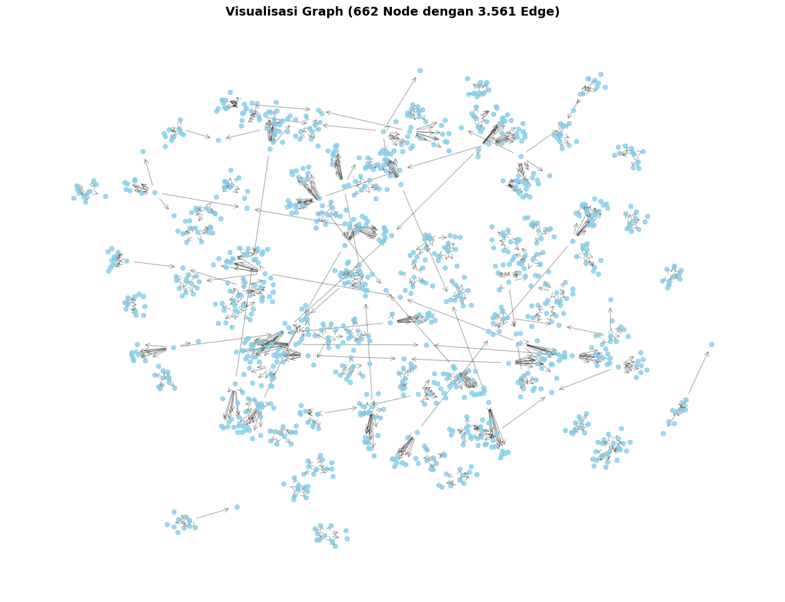
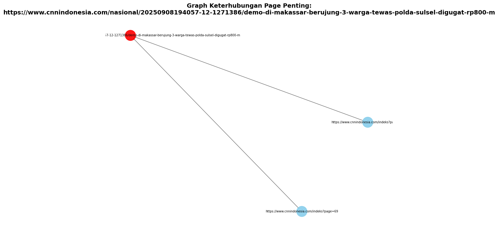

PageRank (Link dlm Page)#
import pandas as pd
import numpy as np
import networkx as nx
import matplotlib.pyplot as plt
from IPython.display import display
from google.colab import drive
drive.mount('/content/drive')
Mounted at /content/drive
nama_file = '/content/drive/MyDrive/PPW/output/cnnindonesia_links1.csv'
data_page = pd.read_csv(nama_file)
display(data_page)
| id_berita | page | link_keluar | |
|---|---|---|---|
| 0 | 1 | https://www.cnnindonesia.com/indeks?page=1 | https://www.cnnindonesia.com/nasional/20250911... |
| 1 | 2 | https://www.cnnindonesia.com/indeks?page=1 | https://www.cnnindonesia.com/olahraga/20250911... |
| 2 | 3 | https://www.cnnindonesia.com/indeks?page=1 | https://www.cnnindonesia.com/internasional/202... |
| 3 | 4 | https://www.cnnindonesia.com/indeks?page=1 | https://www.cnnindonesia.com/olahraga/20250910... |
| 4 | 5 | https://www.cnnindonesia.com/indeks?page=1 | https://www.cnnindonesia.com/gaya-hidup/202509... |
| ... | ... | ... | ... |
| 995 | 996 | https://www.cnnindonesia.com/indeks?page=100 | https://www.cnnindonesia.com/internasional/202... |
| 996 | 997 | https://www.cnnindonesia.com/indeks?page=100 | https://www.cnnindonesia.com/olahraga/20250907... |
| 997 | 998 | https://www.cnnindonesia.com/indeks?page=100 | https://www.cnnindonesia.com/nasional/20250907... |
| 998 | 999 | https://www.cnnindonesia.com/indeks?page=100 | https://www.cnnindonesia.com/internasional/202... |
| 999 | 1000 | https://www.cnnindonesia.com/indeks?page=100 | https://www.cnnindonesia.com/nasional/20250907... |
1000 rows × 3 columns
Membangun Graph Menggunakan NetworkX#
graph = nx.DiGraph()
edge = list(zip(data_page['page'], data_page['link_keluar']))
graph.add_edges_from(edge)
print(f"Jumlah node (page unik): {graph.number_of_nodes()}")
print(f"Jumlah edge (tautan): {graph.number_of_edges()}")
Jumlah node (page unik): 1076
Jumlah edge (tautan): 1000
# Visualisasi Graph
plt.figure(figsize=(16, 12))
plt.title("Visualisasi Graph (662 Node dengan 3.561 Edge)", fontsize=14, fontweight='bold')
# layout efisien untuk dataset besar
pos = nx.spring_layout(graph, seed=42, k=0.15, iterations=20)
# gambar node dan edge
nx.draw_networkx_nodes(graph, pos, node_color='skyblue', node_size=25, alpha=0.8)
# nx.draw_networkx_edges(graph, pos, edge_color='black', arrows=False, alpha=0.3)
nx.draw_networkx_edges(graph, pos, edge_color='black', arrowstyle='->', arrowsize=12, alpha=0.3)
# label, bisa ditampilkan (resiko visualisasi ga jelas karena link panjang). aktifkan :
# nx.draw_networkx_labels(graph, pos, font_size=6, font_color='black')
plt.axis('off')
plt.show()

Membentuk Matriks Adjacency#
# note: all matriks berukuran 662 x 662, sangat besar untuk ditampilkan
# jadi ditampilkan sebagian (misalnya 30x30)
page = list(graph.nodes())[:30]
A = nx.to_numpy_array(graph, nodelist=page, dtype=int)
data_page_A = pd.DataFrame(A, index=page, columns=page)
print("Matriks Adjacency (A) [30x30]:")
display(data_page_A)
Matriks Adjacency (A) [30x30]:
| https://www.cnnindonesia.com/indeks?page=1 | https://www.cnnindonesia.com/nasional/20250911003943-20-1272349/israel-bom-markas-komando-di-ibu-kota-yaman-35-tewas-118-terluka | https://www.cnnindonesia.com/olahraga/20250911003024-142-1272347/dorong-suporter-andre-onana-dilempar-botol | https://www.cnnindonesia.com/internasional/20250911000640-113-1272346/militer-nepal-batasi-aktivitas-pascademo-gulingkan-rezim-pemerintahan | https://www.cnnindonesia.com/olahraga/20250910132305-156-1272112/dua-helikopter-disiagakan-selama-motogp-mandalika-2025 | https://www.cnnindonesia.com/gaya-hidup/20250910173621-307-1272253/lari-rahasia-hidup-sehat-untuk-tingkatkan-produktivitas-kerja | https://www.cnnindonesia.com/nasional/20250910233117-20-1272345/lokasi-titik-jatuh-helikopter-di-mimika-ditemukan-evakuasi-besok-pagi | https://www.cnnindonesia.com/nasional/20250910204244-22-1272312/foto-porak-poranda-denpasar-diterjang-banjir | https://www.cnnindonesia.com/olahraga/20250910230634-142-1272344/hokky-caraka-minta-maaf-usai-timnas-u-23-gagal-ke-piala-asia | https://www.cnnindonesia.com/tv/20250910215612-404-1272331/video-kapal-misi-kemanusiaan-untuk-gaza-diserang-drone | ... | https://www.cnnindonesia.com/olahraga/20250910165232-142-1272234/timnas-futsal-indonesia-siap-tumpas-denmark-di-final-cfa | https://www.cnnindonesia.com/nasional/20250910205010-22-1272320/foto-aksi-damai-aliansi-ibu-indonesia-desak-aparat-bebaskan-pelajar | https://www.cnnindonesia.com/indeks?page=3 | https://www.cnnindonesia.com/internasional/20250910191327-106-1272284/pratikno-pamer-asta-cita-prabowo-di-asean-human-development-conference | https://www.cnnindonesia.com/ekonomi/20250910203054-625-1272307/pln-epi-genjot-ekosistem-biomassa-demi-target-3-juta-ton-di-2025 | https://www.cnnindonesia.com/ekonomi/20250910131832-532-1272109/apa-warisan-penting-sri-mulyani-selama-jadi-menteri-keuangan | https://www.cnnindonesia.com/olahraga/20250910203123-170-1272308/kesan-mohammad-ahsan-dan-vito-usai-masuk-hall-of-fame-pb-djarum | https://www.cnnindonesia.com/hiburan/20250910111035-220-1272052/selain-indonesia-ini-negara-asia-yang-sudah-ajukan-film-ke-oscar-2026 | https://www.cnnindonesia.com/internasional/20250910201733-106-1272304/prabowo-telepon-emir-qatar-tanya-kondisi-usai-doha-diserang-israel | https://www.cnnindonesia.com/ekonomi/20250910204701-532-1272319/prabowo-setujui-ide-menkeu-tarik-rp200-t-uang-pemerintah-di-bi | |
|---|---|---|---|---|---|---|---|---|---|---|---|---|---|---|---|---|---|---|---|---|---|
| https://www.cnnindonesia.com/indeks?page=1 | 0 | 1 | 1 | 1 | 1 | 1 | 1 | 1 | 1 | 1 | ... | 0 | 0 | 0 | 0 | 0 | 0 | 0 | 0 | 0 | 0 |
| https://www.cnnindonesia.com/nasional/20250911003943-20-1272349/israel-bom-markas-komando-di-ibu-kota-yaman-35-tewas-118-terluka | 0 | 0 | 0 | 0 | 0 | 0 | 0 | 0 | 0 | 0 | ... | 0 | 0 | 0 | 0 | 0 | 0 | 0 | 0 | 0 | 0 |
| https://www.cnnindonesia.com/olahraga/20250911003024-142-1272347/dorong-suporter-andre-onana-dilempar-botol | 0 | 0 | 0 | 0 | 0 | 0 | 0 | 0 | 0 | 0 | ... | 0 | 0 | 0 | 0 | 0 | 0 | 0 | 0 | 0 | 0 |
| https://www.cnnindonesia.com/internasional/20250911000640-113-1272346/militer-nepal-batasi-aktivitas-pascademo-gulingkan-rezim-pemerintahan | 0 | 0 | 0 | 0 | 0 | 0 | 0 | 0 | 0 | 0 | ... | 0 | 0 | 0 | 0 | 0 | 0 | 0 | 0 | 0 | 0 |
| https://www.cnnindonesia.com/olahraga/20250910132305-156-1272112/dua-helikopter-disiagakan-selama-motogp-mandalika-2025 | 0 | 0 | 0 | 0 | 0 | 0 | 0 | 0 | 0 | 0 | ... | 0 | 0 | 0 | 0 | 0 | 0 | 0 | 0 | 0 | 0 |
| https://www.cnnindonesia.com/gaya-hidup/20250910173621-307-1272253/lari-rahasia-hidup-sehat-untuk-tingkatkan-produktivitas-kerja | 0 | 0 | 0 | 0 | 0 | 0 | 0 | 0 | 0 | 0 | ... | 0 | 0 | 0 | 0 | 0 | 0 | 0 | 0 | 0 | 0 |
| https://www.cnnindonesia.com/nasional/20250910233117-20-1272345/lokasi-titik-jatuh-helikopter-di-mimika-ditemukan-evakuasi-besok-pagi | 0 | 0 | 0 | 0 | 0 | 0 | 0 | 0 | 0 | 0 | ... | 0 | 0 | 0 | 0 | 0 | 0 | 0 | 0 | 0 | 0 |
| https://www.cnnindonesia.com/nasional/20250910204244-22-1272312/foto-porak-poranda-denpasar-diterjang-banjir | 0 | 0 | 0 | 0 | 0 | 0 | 0 | 0 | 0 | 0 | ... | 0 | 0 | 0 | 0 | 0 | 0 | 0 | 0 | 0 | 0 |
| https://www.cnnindonesia.com/olahraga/20250910230634-142-1272344/hokky-caraka-minta-maaf-usai-timnas-u-23-gagal-ke-piala-asia | 0 | 0 | 0 | 0 | 0 | 0 | 0 | 0 | 0 | 0 | ... | 0 | 0 | 0 | 0 | 0 | 0 | 0 | 0 | 0 | 0 |
| https://www.cnnindonesia.com/tv/20250910215612-404-1272331/video-kapal-misi-kemanusiaan-untuk-gaza-diserang-drone | 0 | 0 | 0 | 0 | 0 | 0 | 0 | 0 | 0 | 0 | ... | 0 | 0 | 0 | 0 | 0 | 0 | 0 | 0 | 0 | 0 |
| https://www.cnnindonesia.com/nasional/20250910181510-12-1272267/yusril-minta-restorative-justice-13-tersangka-pembakaran-dprd-sulsel | 0 | 0 | 0 | 0 | 0 | 0 | 0 | 0 | 0 | 0 | ... | 0 | 0 | 0 | 0 | 0 | 0 | 0 | 0 | 0 | 0 |
| https://www.cnnindonesia.com/indeks?page=2 | 0 | 0 | 0 | 0 | 0 | 0 | 0 | 0 | 0 | 0 | ... | 1 | 1 | 0 | 0 | 0 | 0 | 0 | 0 | 0 | 0 |
| https://www.cnnindonesia.com/tv/20250910220153-404-1272339/video-aktivis-ditangkap-isnur-harusnya-provokatornya-yang-dibongkar | 0 | 0 | 0 | 0 | 0 | 0 | 0 | 0 | 0 | 0 | ... | 0 | 0 | 0 | 0 | 0 | 0 | 0 | 0 | 0 | 0 |
| https://www.cnnindonesia.com/tv/20250910220149-404-1272333/video-tim-advokat-proses-hukum-ke-delpedro-dipaksakan | 0 | 0 | 0 | 0 | 0 | 0 | 0 | 0 | 0 | 0 | ... | 0 | 0 | 0 | 0 | 0 | 0 | 0 | 0 | 0 | 0 |
| https://www.cnnindonesia.com/tv/20250910220153-404-1272335/video-aktivis-ditangkap-komnas-ham-dorong-restorative-justice | 0 | 0 | 0 | 0 | 0 | 0 | 0 | 0 | 0 | 0 | ... | 0 | 0 | 0 | 0 | 0 | 0 | 0 | 0 | 0 | 0 |
| https://www.cnnindonesia.com/nasional/20250910213029-20-1272332/aliansi-ibu-indonesia-minta-aparat-setop-represif-bebaskan-pelajar | 0 | 0 | 0 | 0 | 0 | 0 | 0 | 0 | 0 | 0 | ... | 0 | 0 | 0 | 0 | 0 | 0 | 0 | 0 | 0 | 0 |
| https://www.cnnindonesia.com/olahraga/20250910213706-142-1272329/jadwal-pertandingan-pekan-kelima-super-league-banyak-big-match | 0 | 0 | 0 | 0 | 0 | 0 | 0 | 0 | 0 | 0 | ... | 0 | 0 | 0 | 0 | 0 | 0 | 0 | 0 | 0 | 0 |
| https://www.cnnindonesia.com/tv/20250910215612-404-1272330/video-gibran-reshuffle-sudah-dihitung-matang | 0 | 0 | 0 | 0 | 0 | 0 | 0 | 0 | 0 | 0 | ... | 0 | 0 | 0 | 0 | 0 | 0 | 0 | 0 | 0 | 0 |
| https://www.cnnindonesia.com/nasional/20250910192945-20-1272286/21-rumah-di-batam-rusak-diterjang-puting-beliung | 0 | 0 | 0 | 0 | 0 | 0 | 0 | 0 | 0 | 0 | ... | 0 | 0 | 0 | 0 | 0 | 0 | 0 | 0 | 0 | 0 |
| https://www.cnnindonesia.com/nasional/20250910185051-12-1272279/kpk-segera-tetapkan-dan-umumkan-tersangka-kuota-haji-dalam-waktu-dekat | 0 | 0 | 0 | 0 | 0 | 0 | 0 | 0 | 0 | 0 | ... | 0 | 0 | 0 | 0 | 0 | 0 | 0 | 0 | 0 | 0 |
| https://www.cnnindonesia.com/olahraga/20250910165232-142-1272234/timnas-futsal-indonesia-siap-tumpas-denmark-di-final-cfa | 0 | 0 | 0 | 0 | 0 | 0 | 0 | 0 | 0 | 0 | ... | 0 | 0 | 0 | 0 | 0 | 0 | 0 | 0 | 0 | 0 |
| https://www.cnnindonesia.com/nasional/20250910205010-22-1272320/foto-aksi-damai-aliansi-ibu-indonesia-desak-aparat-bebaskan-pelajar | 0 | 0 | 0 | 0 | 0 | 0 | 0 | 0 | 0 | 0 | ... | 0 | 0 | 0 | 0 | 0 | 0 | 0 | 0 | 0 | 0 |
| https://www.cnnindonesia.com/indeks?page=3 | 0 | 0 | 0 | 0 | 0 | 0 | 0 | 0 | 0 | 0 | ... | 0 | 1 | 0 | 1 | 1 | 1 | 1 | 1 | 1 | 1 |
| https://www.cnnindonesia.com/internasional/20250910191327-106-1272284/pratikno-pamer-asta-cita-prabowo-di-asean-human-development-conference | 0 | 0 | 0 | 0 | 0 | 0 | 0 | 0 | 0 | 0 | ... | 0 | 0 | 0 | 0 | 0 | 0 | 0 | 0 | 0 | 0 |
| https://www.cnnindonesia.com/ekonomi/20250910203054-625-1272307/pln-epi-genjot-ekosistem-biomassa-demi-target-3-juta-ton-di-2025 | 0 | 0 | 0 | 0 | 0 | 0 | 0 | 0 | 0 | 0 | ... | 0 | 0 | 0 | 0 | 0 | 0 | 0 | 0 | 0 | 0 |
| https://www.cnnindonesia.com/ekonomi/20250910131832-532-1272109/apa-warisan-penting-sri-mulyani-selama-jadi-menteri-keuangan | 0 | 0 | 0 | 0 | 0 | 0 | 0 | 0 | 0 | 0 | ... | 0 | 0 | 0 | 0 | 0 | 0 | 0 | 0 | 0 | 0 |
| https://www.cnnindonesia.com/olahraga/20250910203123-170-1272308/kesan-mohammad-ahsan-dan-vito-usai-masuk-hall-of-fame-pb-djarum | 0 | 0 | 0 | 0 | 0 | 0 | 0 | 0 | 0 | 0 | ... | 0 | 0 | 0 | 0 | 0 | 0 | 0 | 0 | 0 | 0 |
| https://www.cnnindonesia.com/hiburan/20250910111035-220-1272052/selain-indonesia-ini-negara-asia-yang-sudah-ajukan-film-ke-oscar-2026 | 0 | 0 | 0 | 0 | 0 | 0 | 0 | 0 | 0 | 0 | ... | 0 | 0 | 0 | 0 | 0 | 0 | 0 | 0 | 0 | 0 |
| https://www.cnnindonesia.com/internasional/20250910201733-106-1272304/prabowo-telepon-emir-qatar-tanya-kondisi-usai-doha-diserang-israel | 0 | 0 | 0 | 0 | 0 | 0 | 0 | 0 | 0 | 0 | ... | 0 | 0 | 0 | 0 | 0 | 0 | 0 | 0 | 0 | 0 |
| https://www.cnnindonesia.com/ekonomi/20250910204701-532-1272319/prabowo-setujui-ide-menkeu-tarik-rp200-t-uang-pemerintah-di-bi | 0 | 0 | 0 | 0 | 0 | 0 | 0 | 0 | 0 | 0 | ... | 0 | 0 | 0 | 0 | 0 | 0 | 0 | 0 | 0 | 0 |
30 rows × 30 columns
Membentuk Matriks Probabilitas Transisi Baris-Stokastik#
adj_full = nx.to_numpy_array(graph, dtype=float)
n = adj_full.shape[0]
# tangani dangling node (page tanpa link_keluar)
out_degree = adj_full.sum(axis=1)
for i in range(n):
if out_degree[i] == 0:
adj_full[i, :] = 1.0
# matriks transisi baris-stokastik
P = adj_full / adj_full.sum(axis=1, keepdims=True)
# tampilan sebagian matriks P
data_page_P = pd.DataFrame(P[:30, :30], columns=range(30), index=range(30))
print("Matriks Transisi (P) [30x30]:")
display(data_page_P)
Matriks Transisi (P) [30x30]:
| 0 | 1 | 2 | 3 | 4 | 5 | 6 | 7 | 8 | 9 | ... | 20 | 21 | 22 | 23 | 24 | 25 | 26 | 27 | 28 | 29 | |
|---|---|---|---|---|---|---|---|---|---|---|---|---|---|---|---|---|---|---|---|---|---|
| 0 | 0.000000 | 0.100000 | 0.100000 | 0.100000 | 0.100000 | 0.100000 | 0.100000 | 0.100000 | 0.100000 | 0.100000 | ... | 0.000000 | 0.000000 | 0.000000 | 0.000000 | 0.000000 | 0.000000 | 0.000000 | 0.000000 | 0.000000 | 0.000000 |
| 1 | 0.000929 | 0.000929 | 0.000929 | 0.000929 | 0.000929 | 0.000929 | 0.000929 | 0.000929 | 0.000929 | 0.000929 | ... | 0.000929 | 0.000929 | 0.000929 | 0.000929 | 0.000929 | 0.000929 | 0.000929 | 0.000929 | 0.000929 | 0.000929 |
| 2 | 0.000929 | 0.000929 | 0.000929 | 0.000929 | 0.000929 | 0.000929 | 0.000929 | 0.000929 | 0.000929 | 0.000929 | ... | 0.000929 | 0.000929 | 0.000929 | 0.000929 | 0.000929 | 0.000929 | 0.000929 | 0.000929 | 0.000929 | 0.000929 |
| 3 | 0.000929 | 0.000929 | 0.000929 | 0.000929 | 0.000929 | 0.000929 | 0.000929 | 0.000929 | 0.000929 | 0.000929 | ... | 0.000929 | 0.000929 | 0.000929 | 0.000929 | 0.000929 | 0.000929 | 0.000929 | 0.000929 | 0.000929 | 0.000929 |
| 4 | 0.000929 | 0.000929 | 0.000929 | 0.000929 | 0.000929 | 0.000929 | 0.000929 | 0.000929 | 0.000929 | 0.000929 | ... | 0.000929 | 0.000929 | 0.000929 | 0.000929 | 0.000929 | 0.000929 | 0.000929 | 0.000929 | 0.000929 | 0.000929 |
| 5 | 0.000929 | 0.000929 | 0.000929 | 0.000929 | 0.000929 | 0.000929 | 0.000929 | 0.000929 | 0.000929 | 0.000929 | ... | 0.000929 | 0.000929 | 0.000929 | 0.000929 | 0.000929 | 0.000929 | 0.000929 | 0.000929 | 0.000929 | 0.000929 |
| 6 | 0.000929 | 0.000929 | 0.000929 | 0.000929 | 0.000929 | 0.000929 | 0.000929 | 0.000929 | 0.000929 | 0.000929 | ... | 0.000929 | 0.000929 | 0.000929 | 0.000929 | 0.000929 | 0.000929 | 0.000929 | 0.000929 | 0.000929 | 0.000929 |
| 7 | 0.000929 | 0.000929 | 0.000929 | 0.000929 | 0.000929 | 0.000929 | 0.000929 | 0.000929 | 0.000929 | 0.000929 | ... | 0.000929 | 0.000929 | 0.000929 | 0.000929 | 0.000929 | 0.000929 | 0.000929 | 0.000929 | 0.000929 | 0.000929 |
| 8 | 0.000929 | 0.000929 | 0.000929 | 0.000929 | 0.000929 | 0.000929 | 0.000929 | 0.000929 | 0.000929 | 0.000929 | ... | 0.000929 | 0.000929 | 0.000929 | 0.000929 | 0.000929 | 0.000929 | 0.000929 | 0.000929 | 0.000929 | 0.000929 |
| 9 | 0.000929 | 0.000929 | 0.000929 | 0.000929 | 0.000929 | 0.000929 | 0.000929 | 0.000929 | 0.000929 | 0.000929 | ... | 0.000929 | 0.000929 | 0.000929 | 0.000929 | 0.000929 | 0.000929 | 0.000929 | 0.000929 | 0.000929 | 0.000929 |
| 10 | 0.000929 | 0.000929 | 0.000929 | 0.000929 | 0.000929 | 0.000929 | 0.000929 | 0.000929 | 0.000929 | 0.000929 | ... | 0.000929 | 0.000929 | 0.000929 | 0.000929 | 0.000929 | 0.000929 | 0.000929 | 0.000929 | 0.000929 | 0.000929 |
| 11 | 0.000000 | 0.000000 | 0.000000 | 0.000000 | 0.000000 | 0.000000 | 0.000000 | 0.000000 | 0.000000 | 0.000000 | ... | 0.100000 | 0.100000 | 0.000000 | 0.000000 | 0.000000 | 0.000000 | 0.000000 | 0.000000 | 0.000000 | 0.000000 |
| 12 | 0.000929 | 0.000929 | 0.000929 | 0.000929 | 0.000929 | 0.000929 | 0.000929 | 0.000929 | 0.000929 | 0.000929 | ... | 0.000929 | 0.000929 | 0.000929 | 0.000929 | 0.000929 | 0.000929 | 0.000929 | 0.000929 | 0.000929 | 0.000929 |
| 13 | 0.000929 | 0.000929 | 0.000929 | 0.000929 | 0.000929 | 0.000929 | 0.000929 | 0.000929 | 0.000929 | 0.000929 | ... | 0.000929 | 0.000929 | 0.000929 | 0.000929 | 0.000929 | 0.000929 | 0.000929 | 0.000929 | 0.000929 | 0.000929 |
| 14 | 0.000929 | 0.000929 | 0.000929 | 0.000929 | 0.000929 | 0.000929 | 0.000929 | 0.000929 | 0.000929 | 0.000929 | ... | 0.000929 | 0.000929 | 0.000929 | 0.000929 | 0.000929 | 0.000929 | 0.000929 | 0.000929 | 0.000929 | 0.000929 |
| 15 | 0.000929 | 0.000929 | 0.000929 | 0.000929 | 0.000929 | 0.000929 | 0.000929 | 0.000929 | 0.000929 | 0.000929 | ... | 0.000929 | 0.000929 | 0.000929 | 0.000929 | 0.000929 | 0.000929 | 0.000929 | 0.000929 | 0.000929 | 0.000929 |
| 16 | 0.000929 | 0.000929 | 0.000929 | 0.000929 | 0.000929 | 0.000929 | 0.000929 | 0.000929 | 0.000929 | 0.000929 | ... | 0.000929 | 0.000929 | 0.000929 | 0.000929 | 0.000929 | 0.000929 | 0.000929 | 0.000929 | 0.000929 | 0.000929 |
| 17 | 0.000929 | 0.000929 | 0.000929 | 0.000929 | 0.000929 | 0.000929 | 0.000929 | 0.000929 | 0.000929 | 0.000929 | ... | 0.000929 | 0.000929 | 0.000929 | 0.000929 | 0.000929 | 0.000929 | 0.000929 | 0.000929 | 0.000929 | 0.000929 |
| 18 | 0.000929 | 0.000929 | 0.000929 | 0.000929 | 0.000929 | 0.000929 | 0.000929 | 0.000929 | 0.000929 | 0.000929 | ... | 0.000929 | 0.000929 | 0.000929 | 0.000929 | 0.000929 | 0.000929 | 0.000929 | 0.000929 | 0.000929 | 0.000929 |
| 19 | 0.000929 | 0.000929 | 0.000929 | 0.000929 | 0.000929 | 0.000929 | 0.000929 | 0.000929 | 0.000929 | 0.000929 | ... | 0.000929 | 0.000929 | 0.000929 | 0.000929 | 0.000929 | 0.000929 | 0.000929 | 0.000929 | 0.000929 | 0.000929 |
| 20 | 0.000929 | 0.000929 | 0.000929 | 0.000929 | 0.000929 | 0.000929 | 0.000929 | 0.000929 | 0.000929 | 0.000929 | ... | 0.000929 | 0.000929 | 0.000929 | 0.000929 | 0.000929 | 0.000929 | 0.000929 | 0.000929 | 0.000929 | 0.000929 |
| 21 | 0.000929 | 0.000929 | 0.000929 | 0.000929 | 0.000929 | 0.000929 | 0.000929 | 0.000929 | 0.000929 | 0.000929 | ... | 0.000929 | 0.000929 | 0.000929 | 0.000929 | 0.000929 | 0.000929 | 0.000929 | 0.000929 | 0.000929 | 0.000929 |
| 22 | 0.000000 | 0.000000 | 0.000000 | 0.000000 | 0.000000 | 0.000000 | 0.000000 | 0.000000 | 0.000000 | 0.000000 | ... | 0.000000 | 0.100000 | 0.000000 | 0.100000 | 0.100000 | 0.100000 | 0.100000 | 0.100000 | 0.100000 | 0.100000 |
| 23 | 0.000929 | 0.000929 | 0.000929 | 0.000929 | 0.000929 | 0.000929 | 0.000929 | 0.000929 | 0.000929 | 0.000929 | ... | 0.000929 | 0.000929 | 0.000929 | 0.000929 | 0.000929 | 0.000929 | 0.000929 | 0.000929 | 0.000929 | 0.000929 |
| 24 | 0.000929 | 0.000929 | 0.000929 | 0.000929 | 0.000929 | 0.000929 | 0.000929 | 0.000929 | 0.000929 | 0.000929 | ... | 0.000929 | 0.000929 | 0.000929 | 0.000929 | 0.000929 | 0.000929 | 0.000929 | 0.000929 | 0.000929 | 0.000929 |
| 25 | 0.000929 | 0.000929 | 0.000929 | 0.000929 | 0.000929 | 0.000929 | 0.000929 | 0.000929 | 0.000929 | 0.000929 | ... | 0.000929 | 0.000929 | 0.000929 | 0.000929 | 0.000929 | 0.000929 | 0.000929 | 0.000929 | 0.000929 | 0.000929 |
| 26 | 0.000929 | 0.000929 | 0.000929 | 0.000929 | 0.000929 | 0.000929 | 0.000929 | 0.000929 | 0.000929 | 0.000929 | ... | 0.000929 | 0.000929 | 0.000929 | 0.000929 | 0.000929 | 0.000929 | 0.000929 | 0.000929 | 0.000929 | 0.000929 |
| 27 | 0.000929 | 0.000929 | 0.000929 | 0.000929 | 0.000929 | 0.000929 | 0.000929 | 0.000929 | 0.000929 | 0.000929 | ... | 0.000929 | 0.000929 | 0.000929 | 0.000929 | 0.000929 | 0.000929 | 0.000929 | 0.000929 | 0.000929 | 0.000929 |
| 28 | 0.000929 | 0.000929 | 0.000929 | 0.000929 | 0.000929 | 0.000929 | 0.000929 | 0.000929 | 0.000929 | 0.000929 | ... | 0.000929 | 0.000929 | 0.000929 | 0.000929 | 0.000929 | 0.000929 | 0.000929 | 0.000929 | 0.000929 | 0.000929 |
| 29 | 0.000929 | 0.000929 | 0.000929 | 0.000929 | 0.000929 | 0.000929 | 0.000929 | 0.000929 | 0.000929 | 0.000929 | ... | 0.000929 | 0.000929 | 0.000929 | 0.000929 | 0.000929 | 0.000929 | 0.000929 | 0.000929 | 0.000929 | 0.000929 |
30 rows × 30 columns
Membentuk Matriks Kolom-Stokastik#
# M = Pᵀ (kolom-stokastik)
M = P.T
data_page_M = pd.DataFrame(M[:30, :30], columns=range(30), index=range(30))
print("Matriks M = Pᵀ [30x30]:")
display(data_page_M)
Matriks M = Pᵀ [30x30]:
| 0 | 1 | 2 | 3 | 4 | 5 | 6 | 7 | 8 | 9 | ... | 20 | 21 | 22 | 23 | 24 | 25 | 26 | 27 | 28 | 29 | |
|---|---|---|---|---|---|---|---|---|---|---|---|---|---|---|---|---|---|---|---|---|---|
| 0 | 0.0 | 0.000929 | 0.000929 | 0.000929 | 0.000929 | 0.000929 | 0.000929 | 0.000929 | 0.000929 | 0.000929 | ... | 0.000929 | 0.000929 | 0.0 | 0.000929 | 0.000929 | 0.000929 | 0.000929 | 0.000929 | 0.000929 | 0.000929 |
| 1 | 0.1 | 0.000929 | 0.000929 | 0.000929 | 0.000929 | 0.000929 | 0.000929 | 0.000929 | 0.000929 | 0.000929 | ... | 0.000929 | 0.000929 | 0.0 | 0.000929 | 0.000929 | 0.000929 | 0.000929 | 0.000929 | 0.000929 | 0.000929 |
| 2 | 0.1 | 0.000929 | 0.000929 | 0.000929 | 0.000929 | 0.000929 | 0.000929 | 0.000929 | 0.000929 | 0.000929 | ... | 0.000929 | 0.000929 | 0.0 | 0.000929 | 0.000929 | 0.000929 | 0.000929 | 0.000929 | 0.000929 | 0.000929 |
| 3 | 0.1 | 0.000929 | 0.000929 | 0.000929 | 0.000929 | 0.000929 | 0.000929 | 0.000929 | 0.000929 | 0.000929 | ... | 0.000929 | 0.000929 | 0.0 | 0.000929 | 0.000929 | 0.000929 | 0.000929 | 0.000929 | 0.000929 | 0.000929 |
| 4 | 0.1 | 0.000929 | 0.000929 | 0.000929 | 0.000929 | 0.000929 | 0.000929 | 0.000929 | 0.000929 | 0.000929 | ... | 0.000929 | 0.000929 | 0.0 | 0.000929 | 0.000929 | 0.000929 | 0.000929 | 0.000929 | 0.000929 | 0.000929 |
| 5 | 0.1 | 0.000929 | 0.000929 | 0.000929 | 0.000929 | 0.000929 | 0.000929 | 0.000929 | 0.000929 | 0.000929 | ... | 0.000929 | 0.000929 | 0.0 | 0.000929 | 0.000929 | 0.000929 | 0.000929 | 0.000929 | 0.000929 | 0.000929 |
| 6 | 0.1 | 0.000929 | 0.000929 | 0.000929 | 0.000929 | 0.000929 | 0.000929 | 0.000929 | 0.000929 | 0.000929 | ... | 0.000929 | 0.000929 | 0.0 | 0.000929 | 0.000929 | 0.000929 | 0.000929 | 0.000929 | 0.000929 | 0.000929 |
| 7 | 0.1 | 0.000929 | 0.000929 | 0.000929 | 0.000929 | 0.000929 | 0.000929 | 0.000929 | 0.000929 | 0.000929 | ... | 0.000929 | 0.000929 | 0.0 | 0.000929 | 0.000929 | 0.000929 | 0.000929 | 0.000929 | 0.000929 | 0.000929 |
| 8 | 0.1 | 0.000929 | 0.000929 | 0.000929 | 0.000929 | 0.000929 | 0.000929 | 0.000929 | 0.000929 | 0.000929 | ... | 0.000929 | 0.000929 | 0.0 | 0.000929 | 0.000929 | 0.000929 | 0.000929 | 0.000929 | 0.000929 | 0.000929 |
| 9 | 0.1 | 0.000929 | 0.000929 | 0.000929 | 0.000929 | 0.000929 | 0.000929 | 0.000929 | 0.000929 | 0.000929 | ... | 0.000929 | 0.000929 | 0.0 | 0.000929 | 0.000929 | 0.000929 | 0.000929 | 0.000929 | 0.000929 | 0.000929 |
| 10 | 0.1 | 0.000929 | 0.000929 | 0.000929 | 0.000929 | 0.000929 | 0.000929 | 0.000929 | 0.000929 | 0.000929 | ... | 0.000929 | 0.000929 | 0.0 | 0.000929 | 0.000929 | 0.000929 | 0.000929 | 0.000929 | 0.000929 | 0.000929 |
| 11 | 0.0 | 0.000929 | 0.000929 | 0.000929 | 0.000929 | 0.000929 | 0.000929 | 0.000929 | 0.000929 | 0.000929 | ... | 0.000929 | 0.000929 | 0.0 | 0.000929 | 0.000929 | 0.000929 | 0.000929 | 0.000929 | 0.000929 | 0.000929 |
| 12 | 0.0 | 0.000929 | 0.000929 | 0.000929 | 0.000929 | 0.000929 | 0.000929 | 0.000929 | 0.000929 | 0.000929 | ... | 0.000929 | 0.000929 | 0.0 | 0.000929 | 0.000929 | 0.000929 | 0.000929 | 0.000929 | 0.000929 | 0.000929 |
| 13 | 0.0 | 0.000929 | 0.000929 | 0.000929 | 0.000929 | 0.000929 | 0.000929 | 0.000929 | 0.000929 | 0.000929 | ... | 0.000929 | 0.000929 | 0.0 | 0.000929 | 0.000929 | 0.000929 | 0.000929 | 0.000929 | 0.000929 | 0.000929 |
| 14 | 0.0 | 0.000929 | 0.000929 | 0.000929 | 0.000929 | 0.000929 | 0.000929 | 0.000929 | 0.000929 | 0.000929 | ... | 0.000929 | 0.000929 | 0.0 | 0.000929 | 0.000929 | 0.000929 | 0.000929 | 0.000929 | 0.000929 | 0.000929 |
| 15 | 0.0 | 0.000929 | 0.000929 | 0.000929 | 0.000929 | 0.000929 | 0.000929 | 0.000929 | 0.000929 | 0.000929 | ... | 0.000929 | 0.000929 | 0.0 | 0.000929 | 0.000929 | 0.000929 | 0.000929 | 0.000929 | 0.000929 | 0.000929 |
| 16 | 0.0 | 0.000929 | 0.000929 | 0.000929 | 0.000929 | 0.000929 | 0.000929 | 0.000929 | 0.000929 | 0.000929 | ... | 0.000929 | 0.000929 | 0.0 | 0.000929 | 0.000929 | 0.000929 | 0.000929 | 0.000929 | 0.000929 | 0.000929 |
| 17 | 0.0 | 0.000929 | 0.000929 | 0.000929 | 0.000929 | 0.000929 | 0.000929 | 0.000929 | 0.000929 | 0.000929 | ... | 0.000929 | 0.000929 | 0.0 | 0.000929 | 0.000929 | 0.000929 | 0.000929 | 0.000929 | 0.000929 | 0.000929 |
| 18 | 0.0 | 0.000929 | 0.000929 | 0.000929 | 0.000929 | 0.000929 | 0.000929 | 0.000929 | 0.000929 | 0.000929 | ... | 0.000929 | 0.000929 | 0.0 | 0.000929 | 0.000929 | 0.000929 | 0.000929 | 0.000929 | 0.000929 | 0.000929 |
| 19 | 0.0 | 0.000929 | 0.000929 | 0.000929 | 0.000929 | 0.000929 | 0.000929 | 0.000929 | 0.000929 | 0.000929 | ... | 0.000929 | 0.000929 | 0.0 | 0.000929 | 0.000929 | 0.000929 | 0.000929 | 0.000929 | 0.000929 | 0.000929 |
| 20 | 0.0 | 0.000929 | 0.000929 | 0.000929 | 0.000929 | 0.000929 | 0.000929 | 0.000929 | 0.000929 | 0.000929 | ... | 0.000929 | 0.000929 | 0.0 | 0.000929 | 0.000929 | 0.000929 | 0.000929 | 0.000929 | 0.000929 | 0.000929 |
| 21 | 0.0 | 0.000929 | 0.000929 | 0.000929 | 0.000929 | 0.000929 | 0.000929 | 0.000929 | 0.000929 | 0.000929 | ... | 0.000929 | 0.000929 | 0.1 | 0.000929 | 0.000929 | 0.000929 | 0.000929 | 0.000929 | 0.000929 | 0.000929 |
| 22 | 0.0 | 0.000929 | 0.000929 | 0.000929 | 0.000929 | 0.000929 | 0.000929 | 0.000929 | 0.000929 | 0.000929 | ... | 0.000929 | 0.000929 | 0.0 | 0.000929 | 0.000929 | 0.000929 | 0.000929 | 0.000929 | 0.000929 | 0.000929 |
| 23 | 0.0 | 0.000929 | 0.000929 | 0.000929 | 0.000929 | 0.000929 | 0.000929 | 0.000929 | 0.000929 | 0.000929 | ... | 0.000929 | 0.000929 | 0.1 | 0.000929 | 0.000929 | 0.000929 | 0.000929 | 0.000929 | 0.000929 | 0.000929 |
| 24 | 0.0 | 0.000929 | 0.000929 | 0.000929 | 0.000929 | 0.000929 | 0.000929 | 0.000929 | 0.000929 | 0.000929 | ... | 0.000929 | 0.000929 | 0.1 | 0.000929 | 0.000929 | 0.000929 | 0.000929 | 0.000929 | 0.000929 | 0.000929 |
| 25 | 0.0 | 0.000929 | 0.000929 | 0.000929 | 0.000929 | 0.000929 | 0.000929 | 0.000929 | 0.000929 | 0.000929 | ... | 0.000929 | 0.000929 | 0.1 | 0.000929 | 0.000929 | 0.000929 | 0.000929 | 0.000929 | 0.000929 | 0.000929 |
| 26 | 0.0 | 0.000929 | 0.000929 | 0.000929 | 0.000929 | 0.000929 | 0.000929 | 0.000929 | 0.000929 | 0.000929 | ... | 0.000929 | 0.000929 | 0.1 | 0.000929 | 0.000929 | 0.000929 | 0.000929 | 0.000929 | 0.000929 | 0.000929 |
| 27 | 0.0 | 0.000929 | 0.000929 | 0.000929 | 0.000929 | 0.000929 | 0.000929 | 0.000929 | 0.000929 | 0.000929 | ... | 0.000929 | 0.000929 | 0.1 | 0.000929 | 0.000929 | 0.000929 | 0.000929 | 0.000929 | 0.000929 | 0.000929 |
| 28 | 0.0 | 0.000929 | 0.000929 | 0.000929 | 0.000929 | 0.000929 | 0.000929 | 0.000929 | 0.000929 | 0.000929 | ... | 0.000929 | 0.000929 | 0.1 | 0.000929 | 0.000929 | 0.000929 | 0.000929 | 0.000929 | 0.000929 | 0.000929 |
| 29 | 0.0 | 0.000929 | 0.000929 | 0.000929 | 0.000929 | 0.000929 | 0.000929 | 0.000929 | 0.000929 | 0.000929 | ... | 0.000929 | 0.000929 | 0.1 | 0.000929 | 0.000929 | 0.000929 | 0.000929 | 0.000929 | 0.000929 | 0.000929 |
30 rows × 30 columns
Menghitung PageRank Iteratif (Manual)#
def pagerank_iteratif(M, pagelist, d=0.85, max_iter=100, tol=1e-6):
n = M.shape[0]
r = np.ones(n) / n
teleport = (1 - d) / n
for i in range(max_iter):
r_new = d * M @ r + teleport
# debugging aja
indeks_top_page = np.argmax(r_new) # indeks page dengan PageRank tertinggi
top_page = pagelist[indeks_top_page] # page dengan score pagerank tertinggi
print(f"Iterasi {i+1}: Page {top_page} dengan PageRank {r_new[indeks_top_page]:.6f}")
if np.linalg.norm(r_new - r, 1) < tol:
# debugging aja
print(f"Konvergen setelah {i+1} iterasi")
break
r = r_new
return r
print("Menghitung PageRank:")
urutan_page = list(graph.nodes())
r = pagerank_iteratif(M, pagelist=urutan_page, d=0.85, max_iter=100, tol=1e-6)
Menghitung PageRank:
Iterasi 1: Page https://www.cnnindonesia.com/olahraga/20250909220106-142-1271863/kata-kata-gerald-vanenburg-usai-indonesia-gagal-ke-piala-asia-u-23 dengan PageRank 0.001014
Iterasi 2: Page https://www.cnnindonesia.com/ekonomi/20250909194016-92-1271824/kkp-kasus-udang-ri-tercemar-radioaktif-hanya-terjadi-di-1-pengiriman dengan PageRank 0.001007
Iterasi 3: Page https://www.cnnindonesia.com/nasional/20250910205010-22-1272320/foto-aksi-damai-aliansi-ibu-indonesia-desak-aparat-bebaskan-pelajar dengan PageRank 0.001008
Iterasi 4: Page https://www.cnnindonesia.com/internasional/20250910170143-134-1272271/warga-as-demo-pro-palestina-di-depan-resto-tempat-trump-makan dengan PageRank 0.001008
Iterasi 5: Page https://www.cnnindonesia.com/nasional/20250910061610-20-1271912/daftar-korban-hilang-dan-tewas-imbas-banjir-bandang-ntt-ada-2-bayi dengan PageRank 0.001008
Konvergen setelah 5 iterasi
Menampilkan dan Menyimpan Hasil PageRank (Semua Page)#
score_pagerank = pd.DataFrame({
'page': list(graph.nodes()),
'pagerank': r
})
# mengurutkan nilai PageRank tertinggi ke terendah
data_pagerank_page = score_pagerank.sort_values(by='pagerank', ascending=False).reset_index(drop=True)
print("Data Page dan Score PageRank:")
display(data_pagerank_page)
Data Page dan Score PageRank:
| page | pagerank | |
|---|---|---|
| 0 | https://www.cnnindonesia.com/nasional/20250908... | 0.001008 |
| 1 | https://www.cnnindonesia.com/internasional/202... | 0.001008 |
| 2 | https://www.cnnindonesia.com/tv/20250908153956... | 0.001008 |
| 3 | https://www.cnnindonesia.com/edukasi/202508271... | 0.001008 |
| 4 | https://www.cnnindonesia.com/ekonomi/202509081... | 0.001008 |
| ... | ... | ... |
| 1071 | https://www.cnnindonesia.com/indeks?page=3 | 0.000861 |
| 1072 | https://www.cnnindonesia.com/indeks?page=98 | 0.000861 |
| 1073 | https://www.cnnindonesia.com/indeks?page=4 | 0.000861 |
| 1074 | https://www.cnnindonesia.com/indeks?page=1 | 0.000861 |
| 1075 | https://www.cnnindonesia.com/indeks?page=99 | 0.000861 |
1076 rows × 2 columns
5 Page#
lima_page_penting = data_pagerank_page.head(5)
print("5 Page dengan Nilai PageRank Tertinggi:")
display(lima_page_penting)
5 Page dengan Nilai PageRank Tertinggi:
| page | pagerank | |
|---|---|---|
| 0 | https://www.cnnindonesia.com/nasional/20250908... | 0.001008 |
| 1 | https://www.cnnindonesia.com/internasional/202... | 0.001008 |
| 2 | https://www.cnnindonesia.com/tv/20250908153956... | 0.001008 |
| 3 | https://www.cnnindonesia.com/edukasi/202508271... | 0.001008 |
| 4 | https://www.cnnindonesia.com/ekonomi/202509081... | 0.001008 |
Perbandingan: Menghitung dan Menampilkan Hasil PageRank Menggunakan NetworkX (Semua Page)#
score_pagerank_networkx = nx.pagerank(graph, alpha=0.85)
data_pagerank_page_networkx = pd.DataFrame(list(score_pagerank_networkx.items()), columns=['page', 'pagerank'])
# page score pagerank tertinggi ke terendah
data_page_pagerank_networkx_urut = data_pagerank_page_networkx.sort_values(by='pagerank', ascending=False).reset_index(drop=True)
print("Perbandingan Menggunakan NetworkX - Data Page dan Score PageRank:")
display(data_page_pagerank_networkx_urut)
Perbandingan Menggunakan NetworkX - Data Page dan Score PageRank:
| page | pagerank | |
|---|---|---|
| 0 | https://www.cnnindonesia.com/ekonomi/202509081... | 0.001008 |
| 1 | https://www.cnnindonesia.com/nasional/20250909... | 0.001008 |
| 2 | https://www.cnnindonesia.com/nasional/20250910... | 0.001008 |
| 3 | https://www.cnnindonesia.com/nasional/20250908... | 0.001008 |
| 4 | https://www.cnnindonesia.com/ekonomi/202509091... | 0.001008 |
| ... | ... | ... |
| 1071 | https://www.cnnindonesia.com/indeks?page=3 | 0.000861 |
| 1072 | https://www.cnnindonesia.com/indeks?page=4 | 0.000861 |
| 1073 | https://www.cnnindonesia.com/indeks?page=98 | 0.000861 |
| 1074 | https://www.cnnindonesia.com/indeks?page=99 | 0.000861 |
| 1075 | https://www.cnnindonesia.com/indeks?page=1 | 0.000861 |
1076 rows × 2 columns
# OPSIONAL
# kalau mau simpan hasil data page dan score pagerank pembanding menggunakan NetworkX, aktifkan :
# data_page_pagerank_networkx_urut.to_csv("PPW_Tugas6_LinkDalamPage_PageRank(NetworkX).csv", index=False)
5 Page#
lima_page_penting_networkx = data_page_pagerank_networkx_urut.head(5)
print("5 Page dengan Nilai PageRank Tertinggi (NetworkX):")
display(lima_page_penting_networkx)
5 Page dengan Nilai PageRank Tertinggi (NetworkX):
| page | pagerank | |
|---|---|---|
| 0 | https://www.cnnindonesia.com/ekonomi/202509081... | 0.001008 |
| 1 | https://www.cnnindonesia.com/nasional/20250909... | 0.001008 |
| 2 | https://www.cnnindonesia.com/nasional/20250910... | 0.001008 |
| 3 | https://www.cnnindonesia.com/nasional/20250908... | 0.001008 |
| 4 | https://www.cnnindonesia.com/ekonomi/202509091... | 0.001008 |
Visualisasi Hubungan Page Penting dengan Page Terhubung#
page_penting = lima_page_penting.iloc[0]['page']
print(f"Page dengan nilai PageRank tertinggi: {page_penting}")
neighbors_out = list(graph.successors(page_penting))
neighbors_in = list(graph.predecessors(page_penting))
page_terhubung = set(neighbors_out + neighbors_in + [page_penting])
subgraph_page_terhubung = graph.subgraph(page_terhubung)
Page dengan nilai PageRank tertinggi: https://www.cnnindonesia.com/nasional/20250908194057-12-1271386/demo-di-makassar-berujung-3-warga-tewas-polda-sulsel-digugat-rp800-m
# Visualisasi Graph
plt.figure(figsize=(12, 9))
plt.title(f"Graph Keterhubungan Page Penting:\n{page_penting}", fontsize=14, fontweight='bold')
pos = nx.spring_layout(subgraph_page_terhubung, seed=42, k=0.3)
warna_page = ['red' if page == page_penting else 'skyblue' for page in subgraph_page_terhubung.nodes()]
nx.draw_networkx_nodes(subgraph_page_terhubung, pos, node_color=warna_page, node_size=600, alpha=0.9)
nx.draw_networkx_edges(subgraph_page_terhubung, pos, edge_color='black', arrowstyle='->', arrowsize=8, alpha=0.6)
nx.draw_networkx_labels(subgraph_page_terhubung, pos, font_size=7, font_color='black')
plt.axis('off')
plt.show()

# Data Keterhubungan Page Penting
print(f"Jumlah total page yang terhubung dengan page penting: {len(page_terhubung)}")
# DataFrame untuk incoming dan outgoing edges
df_in = pd.DataFrame({
'page': neighbors_in,
'link_keluar': [page_penting] * len(neighbors_in)
})
df_out = pd.DataFrame({
'page': [page_penting] * len(neighbors_out),
'link_keluar': neighbors_out
})
# gabungkan kedua arah hubungan
data_page_terhubung = pd.concat([df_in, df_out], ignore_index=True)
print(f"Daftar Page yang Terhubung dengan Page Penting:")
display(data_page_terhubung)
Jumlah total page yang terhubung dengan page penting: 3
Daftar Page yang Terhubung dengan Page Penting:
| page | link_keluar | |
|---|---|---|
| 0 | https://www.cnnindonesia.com/indeks?page=69 | https://www.cnnindonesia.com/nasional/20250908... |
| 1 | https://www.cnnindonesia.com/indeks?page=70 | https://www.cnnindonesia.com/nasional/20250908... |